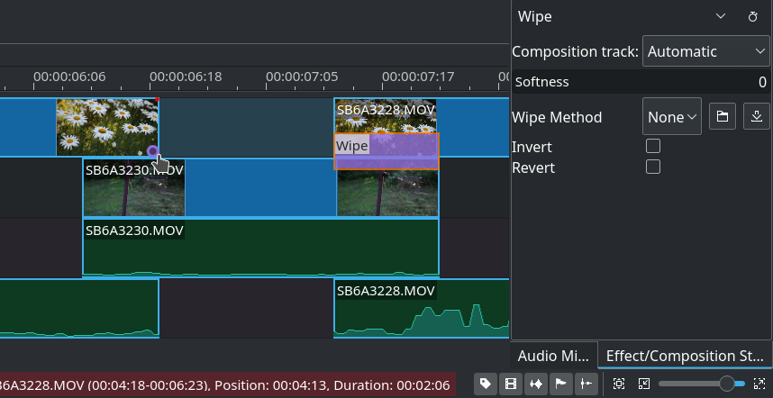

Transitions¶
In kdenlive a transition is a wipe or dissolve composition between two overlapping clips.
There are two ways of adding transitions in kdenlive: Mix clips, aka same tracks transitions, and the legacy way, which is transitions between clips on different tracks.
Wipes are greyscale images in .pgm (Portable GreyMap) format, and during the transition the composition track will be displayed in the darkest areas of the wipe image first. If the wipe is inversed, the composition track will become visible in the brightest areas of the wipe image first instead. You can download more wipes (by clicking the download button in the wipe composition properties) or create your own and load them by clicking the folder button.
Mix Clips¶
New in version 20.12.
Mix Clips provides a way to add a transition between clips on the same track. To use it:
Ensure that there is at least half a second worth of frames at the end of both clips (outside the timeline clip). Without that, kdenlive will not apply the transition, but display an error message.
Select either clip. If there are clips in both ends of the one selected, the transition will be added nearest the playhead.
Ready to add the transition:
Keyboard: Press the U key.
Mouse: double-click at the point where the clips meet. This does not require a clip to be selected.
Toolbar: Press the Mix Clips button on the timeline toolbar
The transition length defaults to one second equally distributed between the two clips. You can drag either end of the transition to adjust.
The default transition is dissolve, but you can select (click) the transtion and edit the wipe method and properties as desired in the effect/transition stack window.
The composition method is set to Luma, and it does not make sense to change that, since there will not really be a transition. Other methods are meant for compositing two videos, not transitioning between them.
Select the desired wipe from Wipe Method
The Reverse option reverses the transtion.
The Softness slider will affect the edges of wipe transtions.
Set the desired duration
Since 21.08: select the alignment of the transition, either left, centered (default) or right.
To delete the transition, select it and press the delete key.
Tip
To apply only transitions on either the video or audio track just lock the track on which you don’t want a transition to be applied and add transitions by one of the above ways on the other track.
Transitions between clips on different tracks¶
This is the legacy way of doing transitions in kdenlive.
To add a transition,
Adjust your clips so that they overlap.
hold the mouse wheel over the top clip bottom corner, and click the purple circle appearing (the status bar will say “Click to add a composition”), or alternatively right-click either clip and select
The default transition is a dissolve, to change that select (click) the composition bar to show the effect/composition stack window.
The transition, when added this way, will cover the overlapping area between the clips.
You can:
Select a composition track. The default is “Automatic” which is likely the correct choice in this case.
Select a wipe.
Enable Inverse to inverse the wipe.
Enable Revert to revert the order of the videos in the transition (which you probably do not want).
If you move or adjust your clips after adding the transition, you need to refit it manually if desired. You can drag the entire transition with the select tool, and adjust its duration by dragging either end.